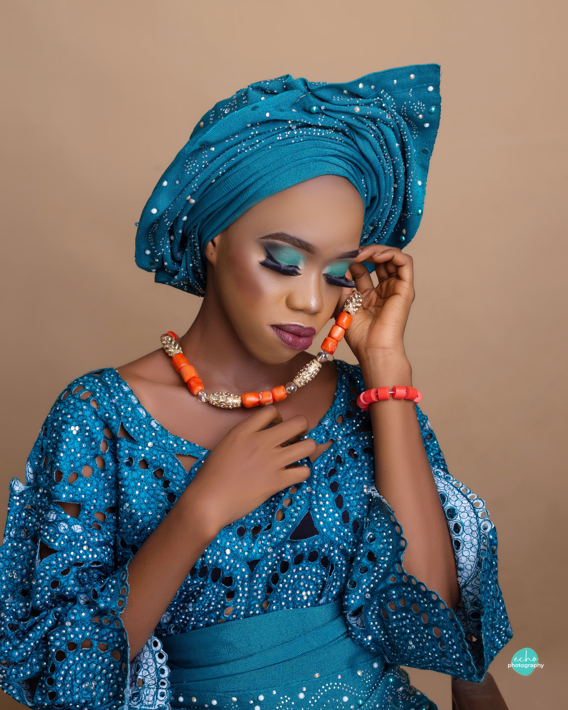

Omatsone Vivian

Summary
I am a certified UX Designer who create intuitive, user-centered solutions. I also am a Brand Identity Designer with expertise in Figma, Adobe XD, Canva and Adobe Illustrator.
Currently I'm learning Web Development and shifting into programming.
Education
- Bachelor of Science (Anatomy), Igbinedion University Okada (2014 - 2018).
Work Exprience
Majestic Optical Clinic, Edo State, Nigeria
2020
Durbar Community High School, Oyo State, Nigeria
2019-2020
- Teacher (National Youth Service Corp Job Assignment)
Tomat Hotel and Suites, Kwara State, Nigeria
2018-2019
University of Benin Teaching Hospital, Edo State, Nigeria
2017
- Worked at The Department of Morbid Anatomy (Histopathology Unit, Secretariat Unit, Mortuary Unit)
- In Completion of my Industrial Training Program for my BSc. Anatomy Degree.
Skills
-
Design Tools
- Figma
- Adobe XD
- Adobe Illustrator
- Canva
-
Design Skills
- Ux Research
- Competitor analysis
- Wireframe Design
- Prototyping / UI Design
- Branding
Awards / Certification
- UXUI Open Bootcamp (November, 2023)
- HNG Internship tranining - Cohort 9 (December, 2022)
- UXtoast - Introduction to Figma (September, 2022)
- Great Learning - UI/UX (September, 2022)
- Great Learning - Introduction to design thinking (September, 2022)
- Great Learning - Introduction to design thinking (September, 2022)
Other